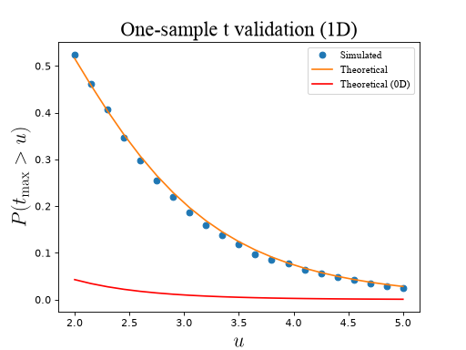
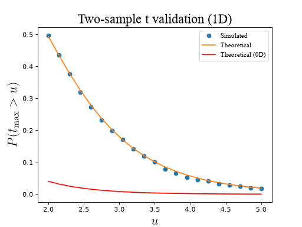
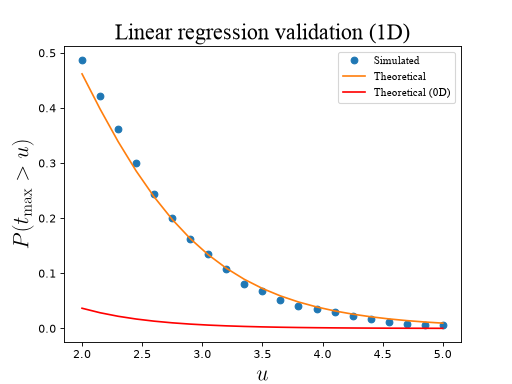
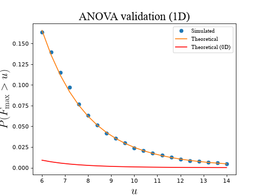
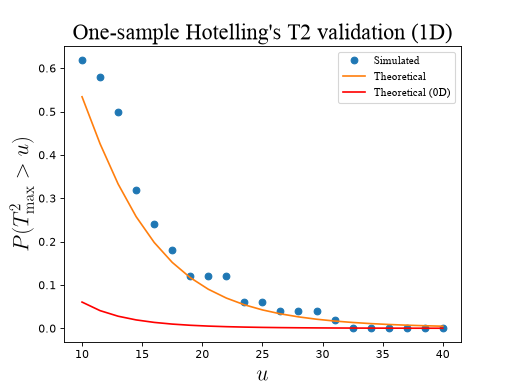
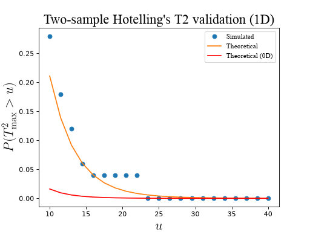
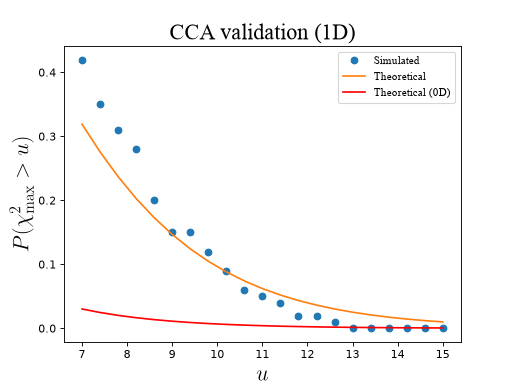
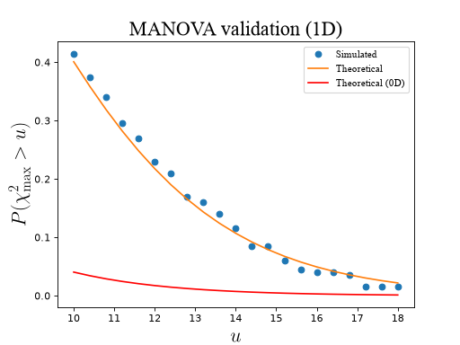

Test statistic field maxima¶
The basic procedure for RFT validations is outlined in Examples/Basic/Validating. This section presents code details for validating the probability with which test statistic field maxima survive particular thresholds.
See ./rft1d/examples/val_max_1_onesample_t_1d.py and other “val_max*.py” scripts
Validations for test statistic set-level and cluster-level inference are available in scripts titled ./rft1d/examples/val_upx*.py
Note
To see details of test statistic computation click on the “Source code” links above each figure.
Univariate¶
One-sample¶
(Source code, 2x.png, png, hires.png, pdf)



Two-sample¶
(Source code, 2x.png, png, hires.png, pdf)



Regression¶
(Source code, 2x.png, png, hires.png, pdf)



One-way ANOVA¶
(Source code, 2x.png, png, hires.png, pdf)



Multivariate¶
One-sample¶
(Source code, 2x.png, png, hires.png, pdf)



Note
Increasing the number of iterations will cause the results to converge to RFT expectations.
Two-sample¶
(Source code, 2x.png, png, hires.png, pdf)



Canonical correlation analysis¶
(Source code, 2x.png, png, hires.png, pdf)



MANOVA¶
(Source code, 2x.png, png, hires.png, pdf)


